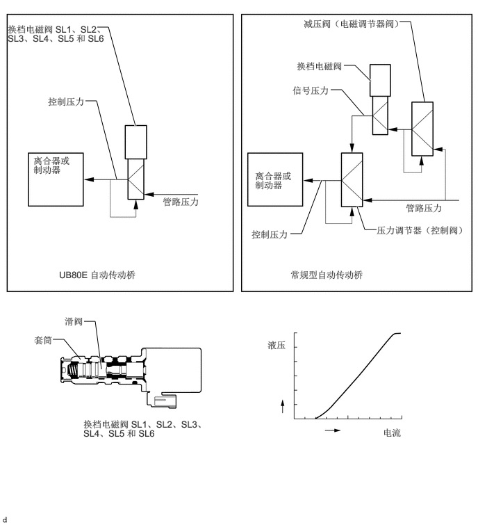

0.792,5.083 0.958,5.083
0.958,5.083 1.208,5.385
false
1.26,4.813 1.427,4.813
1.427,4.813 1.521,5.531
true
1.281,1.51 1.448,1.51
1.448,1.51 1.75,2.688
true
1.458,0.406 1.625,0.406
1.625,0.406 2.031,1.885
true
5.99,0.323 6.156,0.323
6.156,0.323 6.365,1.521
true
5.354,3.094 5.469,3.438
5.469,3.438 5.646,3.438
true
4.958,1.344 5.125,1.344
5.125,1.344 5.458,1.729
true
5.156,0.979 5.323,0.979
5.323,0.979 5.563,1.219
true
4.354,3.5 4.521,3.5
4.521,3.5 4.823,2.698
true
4.552,0.271 6.76,0.719
2.198,0.438
10
false
减压阀（电磁调节器阀）
4.448,0.906 5.771,1.115
1.313,0.198
10
false
换档电磁阀
4.385,1.271 5.49,1.615
1.094,0.333
10
false
信号压力
5.646,3.365 7.167,3.729
1.51,0.354
10
false
压力调节器（控制阀）
3.823,2.552 4.406,2.99
0.573,0.427
10
false
离合器或制动器
6.083,3.031 7.083,3.271
0.99,0.229
10
false
管路压力
4.354,4.031 6.521,4.26
2.156,0.219
10
false
常规型自动传动桥
3.771,3.427 4.375,3.792
0.594,0.354
10
false
控制压力
2.438,2.938 3.438,3.177
0.99,0.229
10
false
管路压力
0.885,4.031 2.76,4.24
1.865,0.198
10
false
UB80E 自动传动桥
0.5,2.323 1.083,2.76
0.573,0.427
10
false
离合器或制动器
0.719,1.438 1.854,1.74
1.125,0.292
10
false
控制压力
0.115,0.354 1.615,1.135
1.49,0.771
10
false
换档电磁阀 SL1、SL2、SL3、SL4、SL5 和 SL6
5.74,6.396 6.302,6.667
0.552,0.26
10
false
电流
4.01,5.083 4.615,5.635
0.594,0.542
10
false
液压
0.969,4.729 1.906,4.99
0.927,0.25
10
false
滑阀
0.51,5.01 1.021,5.271
0.5,0.25
10
false
套筒
1.25,6.271 3.156,6.646
1.896,0.365
10
false
换档电磁阀 SL1、SL2、SL3、SL4、SL5 和 SL6